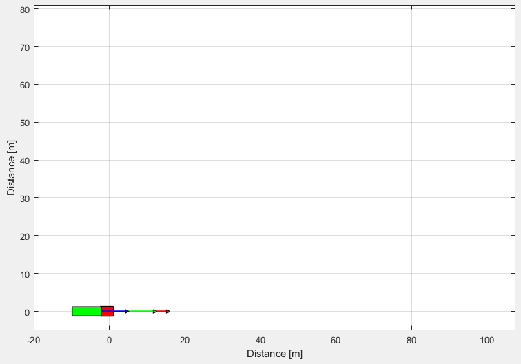
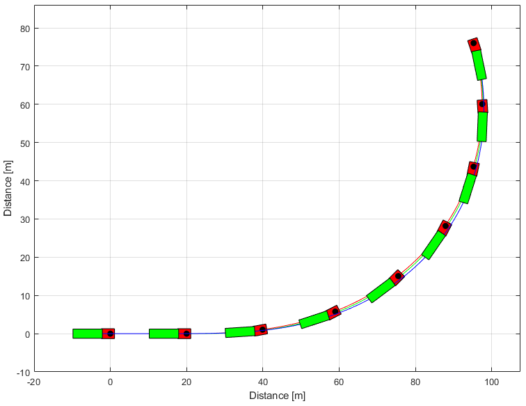
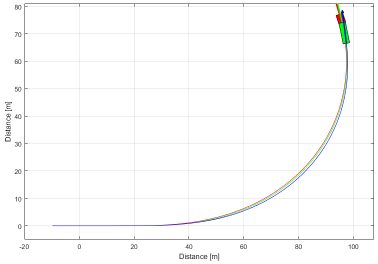

Template Articulated Simulink
This template shows how to simulate an articulated vehicle in Simulink using a s-function.

Contents
Simulink model
Models, parameters and initial conditions are defined in s-function.
Running Simulink model
clear ; close all ; clc simulation = sim('DiagramArticulatedSimulink','StopTime','8'); simout = simulation.simout; tout = simout.time;
Results
% Retrieving vehicle model defined in s-function [VehicleModel,~,~,~] = ArticulatedVehicleSFunction(0,0,0,5); simulator = VehicleDynamicsLateral.Simulator(VehicleModel, tout); % Retrieving states from simulation simulator.XT = simout.Data(:,1); simulator.YT = simout.Data(:,2); simulator.PSI = simout.Data(:,3); simulator.PHI = simout.Data(:,4); simulator.VEL = simout.Data(:,5); simulator.ALPHAT = simout.Data(:,6); simulator.dPSI = simout.Data(:,7); simulator.dPHI = simout.Data(:,8); % Graphics g = VehicleDynamicsLateral.Graphics(simulator); g.Frame(); g.Animation(); % g.Animation('html/TemplateArticulatedSimulink'); % Uncomment to save animation gif 